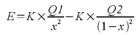
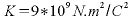
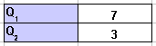
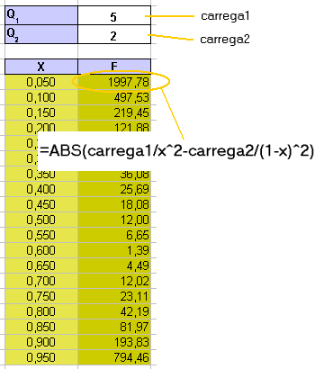
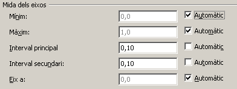
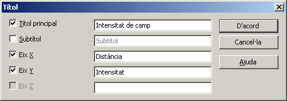
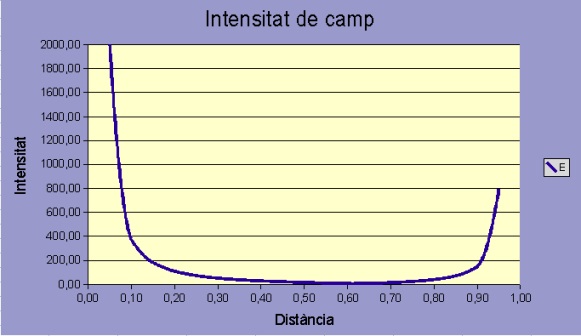

UF4. Fulls de càlcul
Mòdul 2 - Exercici 6
Estudi gràfic de fenòmens físics i químics
Intensitat d'un camp elèctric al llarg d'un segment
Es tracta que construiu la gràfica que mostri com varia la intensitat de camp en els punts entre dues càrregues Q1 i Q2 situades a un metre de distància.
La fórmula que determina aquest valor és

on x és la distància del punt on el vol calcular el valor del camp, a la primera càrrega i, evidentment, 1-x la distància a la segona càrrega. el valor de la constant és

En la representació gràfica atendreu a les següents consideracions
- La intensitat de camp elèctric és un vector, però com treballareu al llarg d'un segment, només considerareu el mòdul, tot i prescindint de la direcció
- Com només ens interessa la forma gràfica, prescindireu del valor de la constant, ja que es pot considerar com un valor d'escala de la representació gràfica
Prepareu el full de càlcul
- Obrir el fitxer M2 i afegir un nou full amb el nom de M2P6 Intensitat d'un camp elèctric.
- Prepareu dues cel·les on escriureu els valors de les càrregues (positius o negatius)
 - Empleneu una columna amb dinou valors equidistants entre 0 i 1, però sense que incloguin aquests per evitar errors en el resultat de les fórmules. Recordeu el que s'explicava a la Exercici 5
- Definiu les àrees de dades X (la taula de dades del punt anterior), carrega1 (el valor de Q1) i carrega2 (el valor de Q2). En aquest cas no es poden utilitzar Q1 ni Q2 com a noms d'àrees ja que coincideixen amb referències a cel·les del full.
- En la columna de la dreta inseriu la fórmula de la intensitat de camp
=ABS(carrega1/x^2-carrega2/(1-x)^2) - Copieu la fórmula a la resta de cel·les de la columna. El resultat hauria de ser semblant a aquest

Construïu el gràfic
- Seguiu les pautes de la Exercici 5
- En aquest gràfic no necessiteu afegir eixos secundaris; només haureu de definir el format, quant a l'escala de l'eix X, tal com podeu veure en la imatge

- Amb l'opció de menú Insereix | Títol definiu els els títols dels eixos tal com veieu en la figura
 - Podeu fer mostrar només dos decimal als valors X de la taula perquè els valors que apareixen a l'eix X del gràfic siguin llegibles (premeu F9 per forçar l'actualització del diagrama)
- El resultat final s'ha de semblar al següent:
 - Deseu el resultat.

|
|

|
|
|